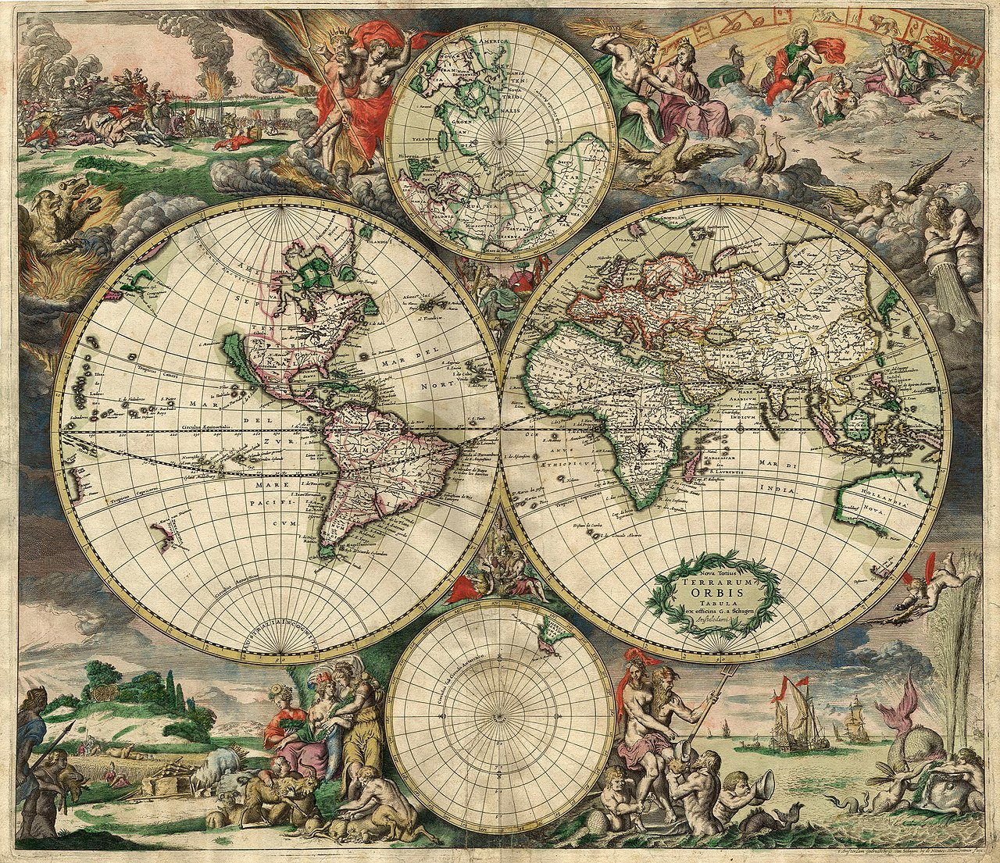
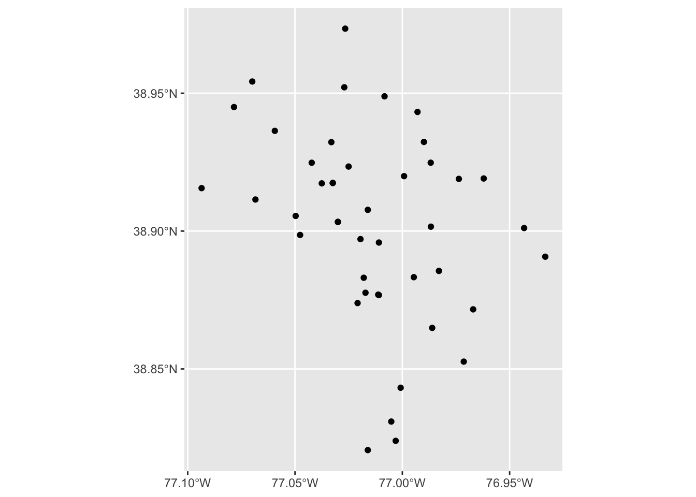
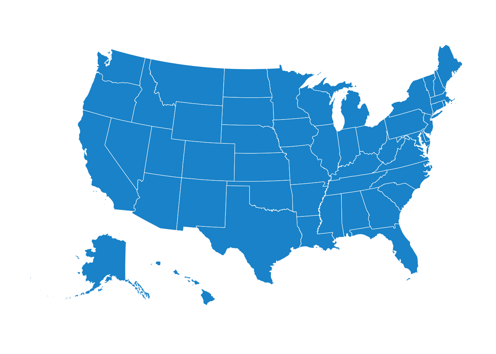
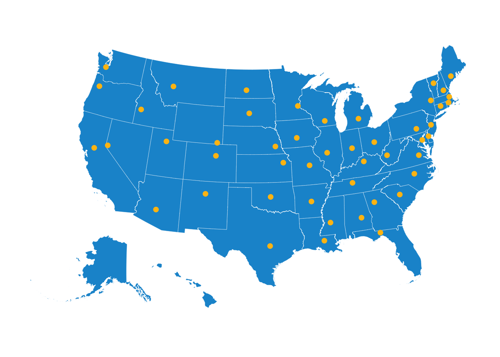

Introduction
Geospatial analysis is the ingestion, manipulation, display, and modeling of geographic and spatial data. The data can be represented explicitly as coordinates (latitude & longitude) or implicitly as addresses, Census tracts, or other identifiers.
This guide outlines the many tools in R for geospatial analysis and mapping. New tools are always being developed, so this guide will be occasionally updated as better methods emerge.
R can have a steeper learning curve than point-and-click tools for geospatial analysis like ArcGIS. The extra effort is worth the reward.
- Geospatial analysis in R scales better than pointing-and-clicking. Clear scripts can easily scale across time, across geography, and across analyses.
- Point-and-click tools are not reproducible. The audience, other researchers, and the analyst/mapper 6 months after the analysis is completed will have little idea what happened in a stream of undocumented right- and left-clicks. R is a scripting language that if used properly, creates a reproducible script that can be read and rerun many years later.
- Most point-and-click tools for geospatial analysis are proprietary and expensive. R is free opensource software. The software and most of its packages can be used for free by anyone for almost anything.
Please don’t hesitate to contact Sarah Strochak (sstrochak@urban.org) or Aaron Williams (awilliams@urban.org) if you have any questions about this guide or need any assistance with R.
Additionally, Rob Pitingolo (rpitingolo@urban.org) and the Urban Institute Mapping Users Group are excellent resources for mapping and geospatial analysis.
Mapping
 World map, 1689
{kind=link}
Basic Concepts
Simple features
Simple features are a way to describe the spatial attributes of real life objects. In R, this is implemented as a data frame that contains a column of geographic information. Geographic information is made up of points, and can be represented as points, lines, polygons, multipolygons, and more.
Simple features work well with tidyverse functions, including ggplot2. This means that we can use a lot of the same data wranling tools when we are working with spatial data.
sf dataframes in R generally include both spatial and non-spatial data. In the example below, the dataframe contains state identifiers, and a column called geometry, which contains a nested list of coordinates. Each coordinate contains a vertex of the shape of the state; when combined and appropriately grouped, this is what allows the shape to render corectly.
library(sf) is a key tool for working with spatial data in R. Functions included in the package provide easy and reproducable ways to replicate many tasks commonly done in ArcGIS and other GIS software. The dataframe structure makes it easy to combine, filter, join, and manipulate geospatial data.
Getting geospatial data
So you want to make a map in R- the first thing you need to do is get spatial data. There are many strategies to convert or obtain sf objects that can then be mapped.
R packages with geographic data
library(urbnmapr)
urbnmapr provides sf objects for mapping US states and counties. The get_urbn_map() function allows you to load both states and counties, with options for including territories. For information on how to install urbnmapr, see the GitHub repository.
library(urbnmapr)
states <- get_urbn_map("states", sf = TRUE)library(tigris)
library(tigris) allows you to easily download TIGER and cartographic boundaries from the US Census Bureaus. In order to load in the boundaries as sf objects, run once per session.
tigris has all standard census geographies, including census tracts, counties, CBSAs, ZCTAs, congressional districts, and more. It also includes other elements such as water, roads, and military bases.
By default, tigris will download TIGER line boundaries. TIGER line shapefiles contain detailed, full boundaries. This means that the boundaries are not clipped to the shoreline. For thematic mapping, cartographic boundaries are a better choice, as they are clipped to the shoreline and generalized. To load catrographic boundaries, include the argument.
You can also load boudaries for past years; tigris will default to the most recent year.
Unlike urbnmapr, different functions are used for different geographic levels- for instance, the blocks() function will load census block groups, and the states() function will load states. For the full list of functions, see the package vignette.
library(tigris)
options(tigris_class = "sf")
md_zctas <- zctas(state = "MD",
cb = TRUE)library(rnaturalearth)
library(rnaturalearth) is similar to tigris, but allows you to download and use boundaries beyond the US. Instead of setting class to sf one time per session, the returnclass = SF argument can be used each time you use a function from the package.
library(rnaturalearth)
world <- ne_countries(returnclass = "sf")
ggplot() +
geom_sf(data = world, mapping = aes())Converting data to sf
library(sf) contains functions for converting existing data that has columns for latitude and longitude into an sf object. This is most easily done with point data. It is important to assign the correct CRS when converting- otherwise, your points might end up in a different map projection, and it will be difficult to reproject them.
library(sf)
state_capitals <- read_csv("mapping/data/state-capitals.csv")
state_capitals_sf <- state_capitals %>%
st_as_sf(coords = c("longitude", "latitude"),
crs = 4326)Reading in shapefiles
library(sf) also contains functions that allow you to read in shapefiles. Most shapefiles are traditionally stored as 6 different files. st_read() has two required arguments: the directory where the shapefile is located (dsn =) and the name of the layer (layer =). Note that you do not need a file extension on the layer, since R will be looking for all 6 files, each of which have different extensions.
list.files("mapping/shapefiles")## [1] "Basemap_of_DC_in_Dark_Gray.cpg" "Basemap_of_DC_in_Dark_Gray.dbf"
## [3] "Basemap_of_DC_in_Dark_Gray.prj" "Basemap_of_DC_in_Dark_Gray.shp"
## [5] "Basemap_of_DC_in_Dark_Gray.shx"dc <- st_read(dsn = "mapping/shapefiles",
layer = "Basemap_of_DC_in_Dark_Gray")## Reading layer `Basemap_of_DC_in_Dark_Gray' from data source `/Users/sarahstrochak/Documents/urban/r-at-urban/mapping/shapefiles' using driver `ESRI Shapefile'
## Simple feature collection with 1 feature and 12 fields
## geometry type: POLYGON
## dimension: XY
## bbox: xmin: -77.11981 ymin: 38.79157 xmax: -76.90917 ymax: 38.99596
## epsg (SRID): 4326
## proj4string: +proj=longlat +datum=WGS84 +no_defsggplot() +
geom_sf(dc, mapping = aes())
Mapping
Most mapping in R fits the same theoretical framework as plotting in R using library(ggplot2). Hadley Wickham’s ggplot2 is based on Leland Wilkinson’s The Grammar of Graphics and Wickham’s A Layered Grammar of Graphics. The layered grammar of graphics is a structured way of thinking about the components of a plot, which then lend themselves to the simple structure of ggplot2 and ultimately mapping.
- Data are what are visualized in a plot and mappings are directions for how data are mapped in a plot in a way that can be perceived by humans.
- Geoms are representations of the actual data like points, lines, and bars.
- Stats are statistical transformations that represent summaries of the data like histograms.
- Scales map values in the data space to values in the aesthetic space. Scales draw legends and axes.
- Coordinate Systems describe how geoms are mapped to the plane of the graphic.
- Facets break the data into meaningful subsets like small multiples.
- Themes control the finer points of a plot such as fonts, font sizes, and background colors.
geom_sf() is used for mapping in ggplot(). Since sf objects by default have a column called geography that contains a nested list of coordinates, you do not usually need to specify aes().
Make sure you load library(tidyverse) or library(ggplot2) each time you make a map with ggplot2.
The basics
When using library(ggplot2), you need to specify the sf dataframe you are using. If your geographic boundaries are stored in a column other than geometry, you will need to specify that too.
Starting with an example from the urbnmapr package, we can load in an sf object and then display it using ggplot().
library(urbnmapr)
states <- get_urbn_map("states", sf = TRUE)
ggplot() +
geom_sf(data = states, mapping = aes())Styling maps
urbnthemes
library(urbnthemes) has functions that are built for mapping with ggplot2.
To install urbnthemes, visit the GitHub repository.
You can use the mapping functions in two ways: setting the map defaults, or adding theme_urbn_map() to the end of your map. These functions will get rid of the axes, labels, and gridlines that are useful for charts, but not needed for maps.
For more information on creating Urban-styled maps, see the Urban Institute Data Visualization Style Guide.
library(urbnthemes)
set_urbn_defaults(style = "map")
ggplot() +
geom_sf(states, mapping = aes()) +
theme_urbn_map()
Map design
The same commands used to change colors, opacity, lines, size, etc. in charts can be used for maps too. For instance, if I wanted to change the colors of the map above, I would simply use the fill = and color = parameters in geom_sf(). fill will change the color of the polygon; color will change the color of polygon outlines, lines, and points.
ggplot() +
geom_sf(states, mapping = aes(),
fill = "#ec008b", color = "#ffffff") +
theme_urbn_map()
Layering
Just like in other GIS software, you can layer multiple sf objects. The shapes will appear from bottom to top in the order they are called. It is important that all layers are in the same projection.
state_capitals <- read_csv("mapping/data/state-capitals.csv") %>%
filter(!state %in% c("Alaska", "Hawaii")) %>%
st_as_sf(coords = c("longitude", "latitude"),
crs = 4326) %>%
st_transform(crs = 2163)
ggplot() +
geom_sf(data = filter(states, !state_abbv %in% c("AK", "HI")),
mapping = aes()) +
geom_sf(data = state_capitals, mapping = aes(),
color = "#1696d2", size = 2.0) +
theme_urbn_map()
Choropleth maps
Choropleth maps display geographic areas with shades, colors, or patterns in proportion to a variable or variables. Choropleth maps can represent massive geographies like the entire world and small geographies like Census Tracts.
Choropleth Maps
library(urbnmapr)
urbnmapr is an R package created by the Urban Institute. It includes state and county outlines for the entire United States with Hawaii and Alaska next to the Continental U.S. The packages includes a data frame for states called states and a data frame for counties called counties.
Variables mapped as colors or shades need to be joined using left_join() to geographic data loaded by library(urbnmapr). In this example, the variable "state_name" is joined to "State". If ever in doubt, use anti_join() to test which cases don’t join. After joining, use geom_polygon(). Be sure to include coord_map("albers", lat0 = 39, lat1 = 45) to create an Albers Equal Area projection.
Analysis
Geocoding
Geocoding is the process of converting addresses into coordinates. Longitudes and latitudes are often necessary for creating dot maps, calculating distances, and linking addresses to geographies like Census tracts.
For a thorough outline of geocoding methods, read the National Neighborhood Indicators Partnership geocoding memo (available on Box) written by Rob Pitingolo. The rest of this section outline methods available in R for geocoding addresses.
US Census Geocoder API
Sampling coordinates
Dot maps are often more informative and convincing than choropleth maps, but data with geographic variables are usually defined by geography level (Census tract, county, etc.) instead of longitude and latitude.
If the data are grouped by small geographies, like a Census tracts, coordinates can be randomly sampled from the shapefile for that geography. In this case, the information gained by being able to see the geographic distribution is often justifies the small amount of sampling error.
The Housing Finance Policy Center’s “An interactive view of the housing boom and bust” uses data with sampled longitudes and latitudes from Census track shapefiles for millions of mortgages across sixteen years. The following example is based on the code from that project.
The two biggest challenges in sampling coordinates are usually: 1) Finding the correct shapefile because geographies change over time and geographic features like water exist in the middle of geographies. 2) Using and merging the shapefile in R because shapefiles are usually complicated hierarchical data structures.
IPUMS helps with first issue because it is a good source for high-quality shapefiles.
The new version of RStudio helps with the second issue because it boasts a new feature that visualizes the branches of the data and helps select desired variables. Click on the shapefile in RStudio to bring up a map of the data. Mouse over the desired variable and click the little logo that appears to the far right.

A line of code that selects the desired variable should appear in the console. For example: shapes@polygons[[1]]@labpt. This trick makes hierarchical data much more manageable.
The following example samples coordinates for mortgage purchase originations by Asian Americans in Rhode Island.
Set up
Bibliography and references
sessionInfo()## R version 3.6.1 (2019-07-05)
## Platform: x86_64-apple-darwin15.6.0 (64-bit)
## Running under: macOS High Sierra 10.13.3
##
## Matrix products: default
## BLAS: /Library/Frameworks/R.framework/Versions/3.6/Resources/lib/libRblas.0.dylib
## LAPACK: /Library/Frameworks/R.framework/Versions/3.6/Resources/lib/libRlapack.dylib
##
## locale:
## [1] en_US.UTF-8/en_US.UTF-8/en_US.UTF-8/C/en_US.UTF-8/en_US.UTF-8
##
## attached base packages:
## [1] stats graphics grDevices utils datasets methods base
##
## other attached packages:
## [1] urbnthemes_0.0.1 urbnmapr_0.0.0.9002 sf_0.7-6
## [4] rnaturalearth_0.1.0 kableExtra_1.1.0 knitr_1.23
## [7] forcats_0.4.0 stringr_1.4.0 dplyr_0.8.3
## [10] purrr_0.3.2 readr_1.3.1 tidyr_0.8.3
## [13] tibble_2.1.3 ggplot2_3.2.0 tidyverse_1.2.1
##
## loaded via a namespace (and not attached):
## [1] ggrepel_0.8.1 Rcpp_1.0.1 lubridate_1.7.4
## [4] lattice_0.20-38 class_7.3-15 assertthat_0.2.1
## [7] zeallot_0.1.0 digest_0.6.20 R6_2.4.0
## [10] cellranger_1.1.0 backports_1.1.4 evaluate_0.14
## [13] e1071_1.7-2 httr_1.4.0 pillar_1.4.2
## [16] rlang_0.4.0 lazyeval_0.2.2 readxl_1.3.1
## [19] rstudioapi_0.10 extrafontdb_1.0 rmarkdown_1.14
## [22] webshot_0.5.1 extrafont_0.17 munsell_0.5.0
## [25] broom_0.5.2 compiler_3.6.1 modelr_0.1.4
## [28] xfun_0.8 pkgconfig_2.0.2 rgeos_0.4-3
## [31] htmltools_0.3.6 tidyselect_0.2.5 gridExtra_2.3
## [34] viridisLite_0.3.0 crayon_1.3.4 withr_2.1.2
## [37] grid_3.6.1 nlme_3.1-140 jsonlite_1.6
## [40] Rttf2pt1_1.3.7 gtable_0.3.0 DBI_1.0.0
## [43] magrittr_1.5 units_0.6-3 scales_1.0.0
## [46] KernSmooth_2.23-15 cli_1.1.0 stringi_1.4.3
## [49] sp_1.3-1 xml2_1.2.0 vctrs_0.2.0
## [52] generics_0.0.2 tools_3.6.1 glue_1.3.1
## [55] hms_0.5.0 yaml_2.2.0 colorspace_1.4-1
## [58] classInt_0.3-3 rvest_0.3.4 haven_2.1.1